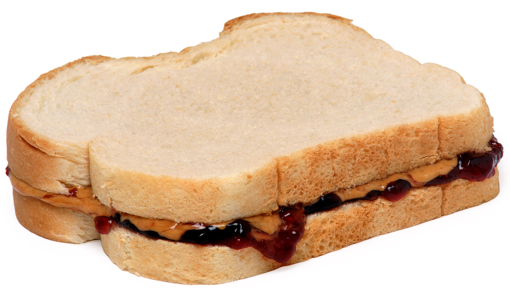

Sweet and Sour Chicken

The peanut butter and jelly sandwich, often referred to as PB&J, is
a timeless favorite, especially for those looking for a quick and
filling meal. This sandwich combines the creamy richness of peanut
butter with the sweet, fruity taste of jelly or jam, all held
together by slices of soft or toasted bread. It’s versatile, easy to
make, and perfect for breakfast, lunch, or a snack. With just a few
basic ingredients, you can prepare a satisfying sandwich in minutes.
Ingredients
- 2 slices of bread
- Peanut butter
- Jelly or jam
Steps
-
Toast the bread (optional): Start by toasting the slices of
bread in a toaster, if you prefer a slightly crispy texture.
Otherwise, you can leave the bread untoasted for a softer
sandwich.
-
Spread the peanut butter: Take one slice of bread and spread a
generous layer of peanut butter on it. The amount can be
adjusted based on your preference. Smooth peanut butter will
give a creamy texture, while crunchy peanut butter will add a
bit of bite.
-
Add the jelly or jam: On top of the peanut butter, spread a
layer of jelly or jam. Make sure the jelly complements the
peanut butter. Grape and strawberry are classic choices, but
feel free to experiment with other flavors like raspberry or
apricot.
-
Close the sandwich: Place the second slice of bread on top of
the peanut butter and jelly, creating a simple but delicious
sandwich.
-
Cut and serve: You can cut the sandwich in half, either
diagonally or into squares, depending on your preference.